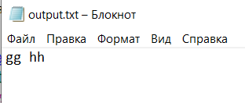

Мета: Опанувати теоретичні основи обробки рядків та текстових файлів мовами функціонального програмування та розробити програми їх реалізації
Вибір середовища та мови функціонального програмування
Для виконання лабораторної роботи було обрано мову Racket. У якості IDE було обрано онлайн компілятор Jdoodle, через простоту та зручность.
Записати в текстовий файл n рядків тексту, що задаються програмою на функціональній мові програмування. Зчитати рядки із створеного програмою файлу, вивести їх на екран. Визначити найдовшу послідовність однакових символів в рядках, що йдуть поспіль без розділових символів. Записати в новий текстовий файл знайдену послідовність.
; запись в файл n строк
(define (write-to-file filename)
;(delete-file filename) ; Видаляемо, якщо файл вже існує
(display "Введите количество строк n=")
(define n (read-line))
(set! n (string->number n))
(define fd (open-output-file filename)) Відкриття файлу для запису
; Запис кожної строки
(define (write-lines i)
(cond ((< i n)
(display i) (display " строка: ")
(define tmp-line (read-line))
(display tmp-line fd)
(newline fd)
(write-lines (+ i 1))))) ; Запис усіх строк
(write-lines 0)
(close-output-port fd))
; Вектор опрацьованих елементів
(define used-letters (vector))
(define count-used-letters (vector))
; Перевірка, чи є символ буквою
(define (allow-letter? letter)
; Вектор недопустимих символів
(define forbidden-symbols (list->vector (string->list "0123456789 .,!?")))
(define forbidden-length (vector-length forbidden-symbols))
(define (iter-symbols i)
(cond ((and (< i forbidden-length) (eq? letter (vector-ref forbidden-symbols i)))
#f)
((< i forbidden-length)
(iter-symbols (+ i 1)))
(else
#t)))
(iter-symbols 0))
; Проходимо по кожному символу
; Якщо символ повторуюється, фіксуємо
(define (check-letter letter)
(define used-length (vector-length used-letters))
(define (iter-check i)
(cond ((and (< i used-length) (eq? letter (vector-ref used-letters i)))
(vector-set! count-used-letters i (+ (vector-ref count-used-letters i) 1)))
((< i used-length)
(iter-check (+ i 1)))
(else ; значит символ не встречался ранее
(set! used-letters (vector-append used-letters (vector letter)))
(set! count-used-letters (vector-append count-used-letters (vector 1))))))
(cond ((allow-letter? letter)
(iter-check 0)))
)
; Підрахунок кількості повторень
(define (count-letters list-lines)
; Перевірка кожної строки
(define (iter-lines lines)
(cond ((not (null? lines))
(define current-line (car lines))
(define size (string-length current-line))
; Прохід по символам строки
(define (iter-one-line i)
(cond ((< i size)
(check-letter (string-ref current-line i))
(iter-one-line (+ i 1)))))
(iter-one-line 0)
(iter-lines (cdr lines)))))
(iter-lines list-lines)
(displayln "Повторяющаяся последовательность:")
; Функція виводу на екран символів та кількості повторень
(define (display-vectors i)
(cond ((< i (vector-length used-letters))
(display (vector-ref used-letters i))
(display " - ")
(display (vector-ref count-used-letters i))
(newline)
(display-vectors (+ i 1)))))
(display-vectors 0)
)
; Зчитування файлу
(define (read-from-file filename)
(define list-lines (list))
(define fd (open-input-file filename))
(define (iter-read n)
(define next-line (read-line fd))
(cond ((not (eof-object? next-line))
(display n) (display ": ")
(displayln next-line)
(set! list-lines (append list-lines (list next-line)))
(iter-read (+ n 1)))))
(iter-read 0)
(close-input-port fd)
(count-letters list-lines)
)
(write-to-file "output.txt")
(read-from-file "output.txt")
Вивід найдовшої послідовності:
В ході виконання лабораторної роботи було досліджено роботу з файлами та сортування списків зі словами, також регулярні вирази.